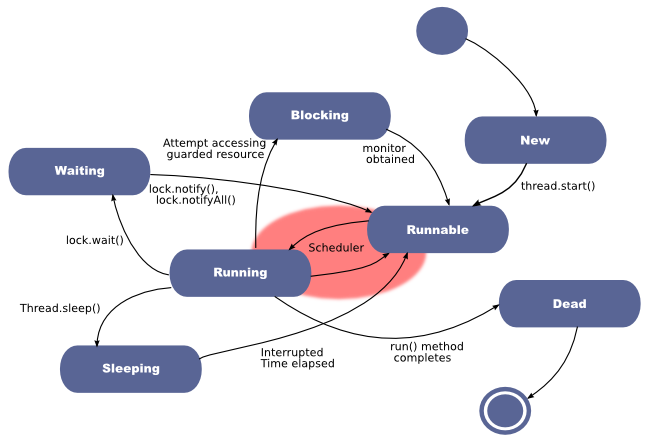

JavaFX Intro
Table of Contents
1 Abstract
JavaFX is the GUI building mechanism for Java applications. It replaces Swing. Other alternatives are libGDX and Unity. JavaFX GUI uses threads, lambda expressions, etc.
2 JavaFX Examples
2.1 Trivial Example 1
- ./javaFxApp1.java Blank pane
javac javaFxApp1.java; java javaFxApp1is the simplest way to run this
2.2 Not So Trivial Example 1
- ./javafxGrid.java Grid of Rectangles
- Relevant to the grid of Game of Life
2.3 Examples From the Web
- http://www.dummies.com/how-to/content/how-to-create-lines-and-shapes-in-javafx.html
- http://www.java2s.com/Tutorials/Java/JavaFX/0040__JavaFX_Line.htm similar to my Java Whiteboard
- http://www.cs.armstrong.edu/liang/intro10e/html/TicTacToe.html Y. Daniel Liang, author of "Introduction to Java Programming", 10th Edition
- https://www.safaribooksonline.com/library/view/javafxtm-developing-rich/9780137013524/ch13.html Eric Bruno; Jim Connors; Jim Clarke, "JavaFX: Developing Rich Internet Applications", RIA, Addison-Wesley Professional, 2009. Safari On-Line. We can read through WSU Library proxy.
- https://github.com/hallvard/javafx/blob/master/games/src/games/sudoku/ Not sure how good this is.
3 JavaFX Overview
- Graphics, UI, video, audio, etc.
- Java APIs, integrated with Java 8; Not to be confused with JavaFX 1.x, which is a scripting language, not a Java API
- Effective JavaFX: Understand concurrency
- Effective JavaFX: Understand event driven programming
3.1 Replaces Swing
- "Is JavaFX replacing Swing as the new client UI library for Java SE?"
- "Yes. However, Swing will remain part of the Java SE specification for the foreseeable future, and therefore included in the JRE. While we recommend developers to leverage JavaFX APIs as much as possible when building new applications, it is possible to extend a Swing application with JavaFX, allowing for a smoother transition." http://www.oracle.com/technetwork/java/javafx/overview/faq-1446554.html#6
3.2 JavaFX Getting Started
- https://docs.oracle.com/javafx/2/get_started/jfxpub-get_started.htm Work with the source code as you read. Highly Recommended Reading
- Ensemble "provides a gallery of over 100 sample applications that use a wide range of JavaFX features, such as graphics, UI controls, animation, charts, media and WebView. Source code for each sample and links to API documentation are also provided. Ensemble will provide developers with an interactive reference tool for what they can build with JavaFX."
- http://www.oracle.com/technetwork/java/javase/overview/javafx-samples-2158687.html
- http://docs.gluonhq.com/javafxports/ JavaFX tutorial, 2015. Presents JavaFX in the context of Android and iOS also.
- JavaFX GUI Basics, slides
- JavaFX UI Controls and Multimedia, slides
4 JavaFX App
- Extend javafx.application.Application
- Override the start() method
- follow along ./javafxGrid.java Grid of Rectangles
4.1 Stage
- Think of it as a window. (Theater analogy)
4.2 Scene
- Container for a scene graph.
- A stage can have multiple scenes.
4.3 Pane
- Organizer of nodes in scene graph
- StackPane, FlowPane, TilePane, GridPane, etc
4.4 Scene Graph
- Tree of nodes; there is a root node.
- A branch may have children (e.g., Group, Region)
- Leaf does not have children, (e.g., Rectangle, Circle)
- http://docs.oracle.com/javafx/2/scenegraph/jfxpub-scenegraph.htm
- https://www.google.com/search?q=javafx+scene+graph+example
- Oracle JavaFX Scene Builder
5 Events
5.1 Std Control Flow
- Branches (a conditional or switch selects control flow)
- Loops (a loop repeats control flow)
- Methods (a method call nests control flow)
5.2 Even Based Control
- The occurrence of event changes control flow
- Event handling in UIs
- Events are instances of
javafx.event.Event
5.3 Event properties:
- Event type
- Source
- Target
5.4 Event Driven Programming
- Language Independent Discussion
- Java8 + JavaFX actions are typically written as Lambda Expressions.
- PDF Event-Driven Programming in JavaFX, slides, SUNY Stonybrook
2015; includes src code of examples
- Explains Anonymous Classes
- Explains Inner Classes
- Explains Lambda Expressions
5.5 Event handlers
- An event handler will execute the code given when a certain event occurs.
- Lambda expressions
- For example:
scene.setOnKeyTyped(event -> { ... code ... })
6 JavaFX Games
- Translation: Shifts a node from one position to another
- Rotation: Rotates a node around some point
6.1 The Game Loop
- Classically, a game will have at its heart a loop like this:
while (notEndOfGame) { updateGameState(); renderGame(); }- The frequency of the loop is referred to as the frame rate, and can determine the “smoothness” of the game play. 35mm film runs at 24FPS. Video games often run at about 30-60FPS.
6.2 A Game Loop in JavaFX
- JavaFX takes care of rendering, and can update at about 60FPS when possible.
- The AnimationTimer class can be used to get a call back every frame.
new AnimationTimer() {
@Override
public void handle(long now) { updateGameState(now); }
}.start();
7 JavaFX Multithreaded
- http://www.cs.wright.edu/~pmateti/Courses/4180/Lectures/Concurrency Language independent discussion.
- Java8 Example of threads: http://www.cs.wright.edu/~pmateti/Courses/4180/Lectures/Java8/src/Meenie.java
- Example of Tasks and UI Updates in JavaFX; just the src
- javafx.concurrent Package
- ExecutorService API
- java.util.concurrent.Future Interface
- FXML
- FXML is a scriptable, XML-based declarative language for constructing JavaFX scene graphs.
- https://blogs.oracle.com/sundararajan/entry/using_javafx_fxml_with_nashorn
- Java Rich Internet Applications (RIA) Guide
7.1 State Diagram

8 Refernces
- Oracle.com, http://docs.oracle.com/javase/8/javafx/interoperability-tutorial/concurrency.htm Concurrency in JavaFX 2015 (Note that http://docs.oracle.com/javafx/2/threads/jfxpub-threads.htm is for v2. 2012) Reference.
- Hendrik Ebbers, author of a JavaFX8 book. http://www.guigarage.com/2015/01/concurrency-ui-toolkits-part-1/; http://www.guigarage.com/2015/02/concurrency-ui-toolkits-part-2/; Reference.
- http://jperedadnr.blogspot.com/2015/03/javafx-on-mobile-dream-come-true.html A pretty good blog on how the author ported the 2048 game to Android using JavaFX etc. 2015. Reference.
- http://docs.gluonhq.com/javafxports/ JavaFX ported to Android and iOS. 2015. Reference.
- https://github.com/JacpFX/JacpFX "The JacpFX Project is an API to create Rich Clients in MVC style with JavaFX, Spring (or other DI frameworks) and an Actor like component approach." Reference.
- https://www.cs.rit.edu/~csci242/Lectures/14/Event-diagrams.pdf Java GUIs in JavaFX. 2015. Recommended Reading.
- From cs.stonybrook.edu JavaFX GUI Basics, slides; JavaFX UI Controls and Multimedia, slides; Event-Driven Programming in JavaFX, slides; Recommended Reading.